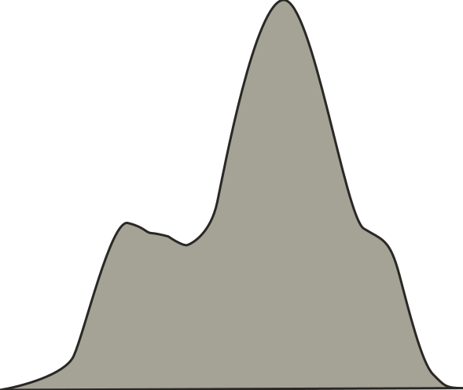
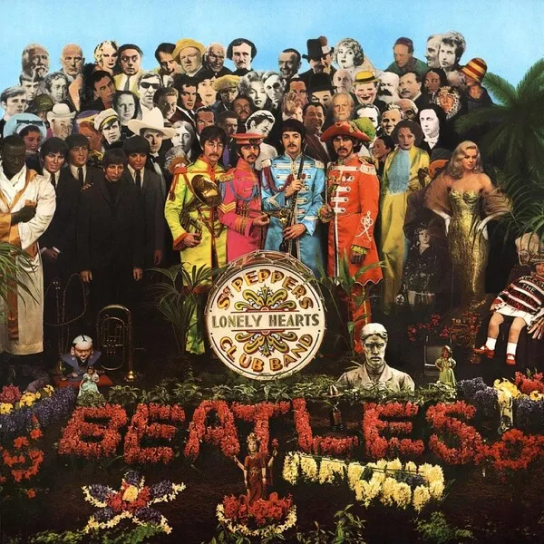
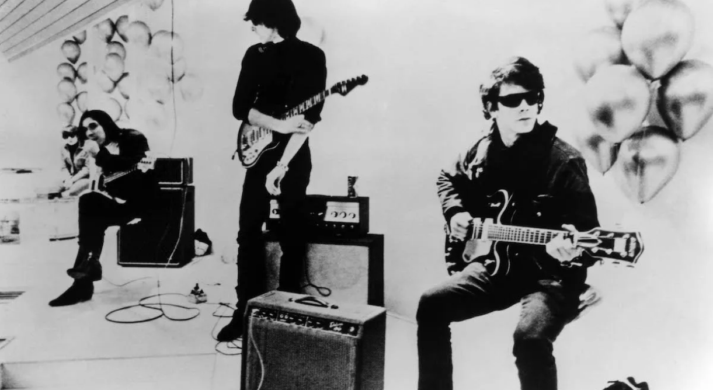
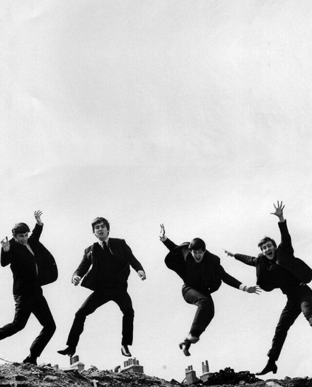

0
2
4
6
8
10
12
14
16
Miles Davis
John Coltrane
Tom Waits
John Williams
Bob Dylan
The Bealtes
Herbie Hancock
The fall
Ennio Morricone
Pharoah Sanders
McCoy Tyner
Swans
Thelonious Monk
Sonny Rollins
Iron Maiden
number of albums
This graph shows the number of albums by artist, with musicians sorted in
descending order by the number of albums.t gives an overview of which
artists have the most albums in the dataset and how many albums they have
released. You can see that jazz musicians dominate the top of the list.
It may not seem like the right thing to do to line up musicians' works,
but for someone just starting to discover and listen to music, you'd be
hard-pressed to find a more attractive website. RYM's 20-year database
is a great resource for musicians and will help you create your own criteria
for what makes good music.
Most prolific artists in the dataset
Database by Sonemic
media design 2 final work
However, the average rating rose slightly in the 2000s, and then fell again
in the 2010s. This graph helps you understand the year-to-year trend in
album ratings, and you can see that older albums tend to receive higher
ratings.
From the graph, you can see that the average album rating was relatively
constant in the 1960s and 1970s, but began to decline in the 1980s and
1990s.
Distribution of album ratings by decade
1950
1960
1970
1980
1990
2000
2010
2020
3.74
3.76
3.78
3.80
3.82
3.84
Decade
Average Rating
Post-Punk
Hard Rock
Symphonic Prog, Progressive Rock
Heavy Metal
Thrash Metal
Hard Bop
Indie Rock
Post-Bop
Progressive Rock
Progressive Rock, Symphonic Prog
Alternative Rock
Progressive Metal
Avant-Garde Jazz
Film Score, Cinematic Classical
Death Metal
3.5
3.6
3.7
3.8
3.9
4.0
4.1
Album Rating
Genre
Distribution of album ratings by genre
Classical music has the highest average rating, while rap has the lowest
average rating. The interquartile range also varies significantly across
genres, indicating that some genres have more consistent ratings than
others. Overall, this chart provides valuable insight into the relationship
between album ratings and genres, and can help music lovers and industry
professionals make informed decisions about which genres to invest in or
explore further.

Release Year
Density
1940
0.000
0.005
0.010
0.
015
0.020
0.025
0.030
1960
1980
2000
2020
With the invention of DAWs in the 2000s, we can expect that the end of the
century was a time of prolific album releases and the creation of a wide
variety of sounds utilizing computers. It's also interesting to see a
sharp increase in album releases starting in the 1960s. This suggests that
popular music really took off after the 1960s.
The distribution of releases continued to increase until 2000, when it
gradually decreased. The top 5000 albums show that recent releases are not
as well-received as older ones.
This graph shows that the distribution of album ratings varies significantly
across the top 15 genres.
Distribution of album release years
3.6
0
200
400
600
800
1000
1200
3.8
4.0
4.2
rating
count
The histogram shows that typical album ratings are most commonly distributed
in the 3.6 to 4.0 range, with about 1200 albums with ratings between 3.68
and 3.72. There are relatively few albums with ratings below 3.0 or above
4.5.
There are also many albums in RYM with an average rating of 1. However,
since the albums in the dataset are the distribution of the top 5000 albums,
we can see that the ratings are highly distributed.
Distribution of album ratings
공중도둑
무너지기
Ratings 20,391
Average rating 3.92
Top Korean albums of all time
Fishmans
98.12.28 男達の別れ
Ratings 21454
Average rating 4.40
Top Live albums of all time
Death grips
Exmilitary
Ratings 35,444
Average rating 4.17
Top Mixtapes of all time
Ratings 19,922
Average rating 4.17
Godspeed You Black Emperor!
Slow Riot for New Zerø Kanada
Top EPs of all time

Ratings 6768
Average rating 4.73
The Bealtes
A Day in the Life
Top songs of all time
RadioHead
Ok computer
Ratings 74027
Average rating 4.24
Top albums of all time
Total ratings: 30,395,572
We analyzed the “Top 5000 Albums of All Time” from the music rating website
RateYourMusic (RYM) and came up with some interesting information. RYM is
one of the largest music databases and communities online, and can be used
in endless ways to discover new music.
RYM uses a five-star rating system that allows all users to rate any music
from 0.5 to 5 stars in half-star increments. This can be analyzed to see
what types of music users prefer and rate highly.
The Velvet Underground.
Photo Charlie Gillett Collection/Redferns
1967 ~ 1973
The Beatles
Photo by -
1962 ~ 1970
Godspeed You! Black Emperor
Live at Roadburn Festival in 2018
1994 ~
Miles Davis
Photo: Francis Wolff
1926~1991
Fishmans
Fishmans the moive
1987~1999
www.rateyourmusic.com
Analyzing the 5000 Albums Dataset

made with figma
support by Sonemic
By reading poetry, the right mind is raised; by observing example, the body
is built up; by listening to music, the character is perfected.
孔子 B.C.551~ 479
ok computer is here
We hope that these analyzes are useful to you.
Hope you the best of luck in further
solidifying your own tastes.
A Day in the Life is here
Godspeed is here
This is not an official website created by RYM
